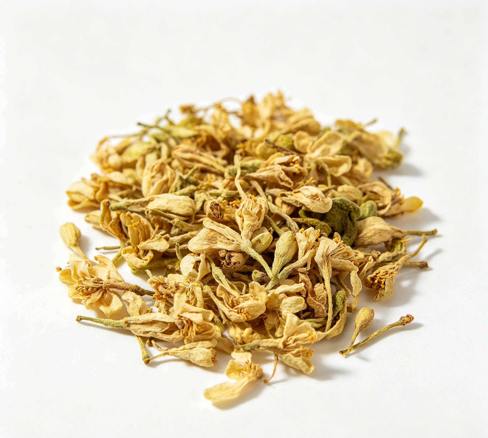

📋 基本信息
中文名代代花
拉丁名Citrus aurantium L.
英文名Flos Citri Aurantii
产地科：芸香科（Rutaceae）；属：柑橘属（Citrus）；拉丁学名：Citrus aurantium L. var. amara Engl.。主产于浙江省，秦岭南坡以南的江苏、江西、福建、四川、贵州等地均有栽培。
性状本品略呈长卵形，顶端稍膨大，长1～2cm，有梗。花萼基部联合，先端5裂，灰绿色，有凹陷的小油点。花瓣5片，覆瓦状抱合，黄白色或灰黄色，可见棕色油点和纵脉。雄蕊多数，基部联合成数束。雌蕊棒状，子房倒卵形。体轻，质脆。气芳香，味微苦。【来源：《江西省中药饮片标准》JXYPBZXD2023-041】
用法用量1.5～2.5g。【来源：《江西省中药饮片标准》JXYPBZXD2023-041】
贮藏置阴凉干燥处，密闭保存，防霉，防蛀。【来源：《江西省中药饮片标准》JXYPBZXD2023-041】
☯ 传统属性
四气平
五味甘、苦
归经肝、胃经
功能主治理气宽胸，开胃。用于脘腹胀闷，恶心，食欲不振。【来源：《江西省中药饮片标准》JXYPBZXD2023-041】
禁忌症孕妇慎用；月经期间忌用。本品含辛弗林等生物碱成分，具有一定升压作用，血压异常者应在医师指导下使用。【来源：《药食同源物质诠释》（黄璐琦主编）等公开文献整理】
毒性按常规量食用一般安全，未见本品药用或食用毒理学不良反应的公开报道；过量饮用可能刺激胃肠道引起不适；所含辛弗林等生物碱有兴奋与升压作用，敏感人群可能出现心悸、血压波动。
适宜体质气虚质、平和质、痰湿质、湿热质
适宜证型气虚证、脾胃气虚证、痰湿证、湿热证
🔬 现代研究
主要成分含挥发油、黄酮类、生物碱类、香豆素类、多糖类等。挥发油以柠檬烯为主（占90%以上），另含壬醛、癸醛、芳樟醇、乙酸芳樟酯等；黄酮类主要有橙皮苷、新橙皮苷、柚皮苷、芦丁、金合欢素、香叶木素、橙皮素-7-O-β-D-葡萄糖苷等；生物碱类主要有辛弗林、N-甲基酪胺；另含香豆素类佛手酚、甾醇类β-谷甾醇及绿原酸、腺苷、维生素等成分。【来源：公开科研文献综述整理】
药理作用公开研究报道本品具有抗氧化、抗炎、抗菌、抗病毒、降血脂及抗肥胖（黄酮提取物可抑制3T3-L1前脂肪细胞增殖与分化）、增强胃肠动力等作用；所含柠檬烯可抑制胃肠平滑肌收缩并有溶解胆石、镇痛、抗菌作用；辛弗林、N-甲基酪胺为升压、抗休克的有效成分；代代花精油可增强GABAA受体介导的Cl⁻电流而有镇静催眠活性；另有抗动脉粥样硬化、保肝、缓解绝经期症状等报道。【来源：公开科研文献综述整理】
食疗功效传统食用以疏肝解郁、理气宽胸、和胃消食为主，芳香醒脾，常用于情绪抑郁、胸脘胀闷、纳食不香的日常调理，是南方地区常用的花茶类食药物质。
食养禁忌
🏭 产品形态与潜在功能
推荐形态
代茶饮提取物袋泡茶
潜在功能